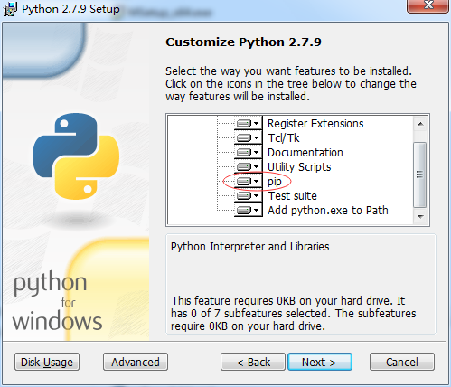
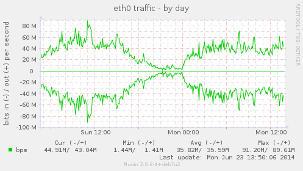
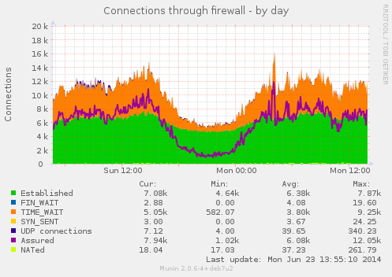
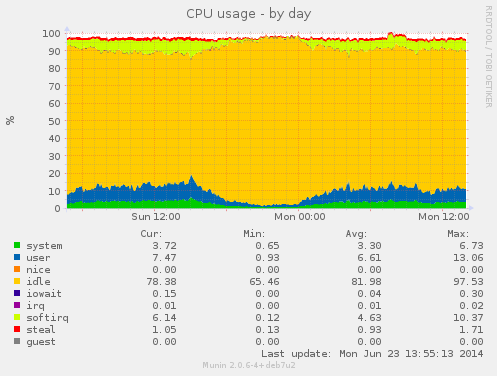
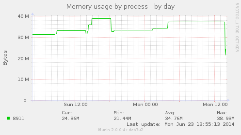
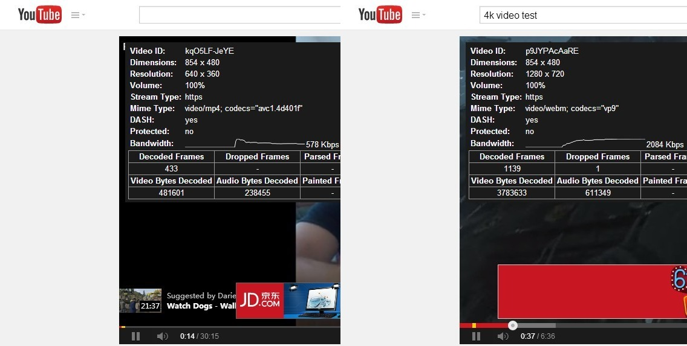
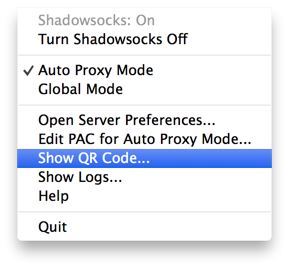

shadowsocks reference
1 前言
基本内容是来自 shadowsocks的wiki 。
2 Shadowsocks 使用说明
一个可穿透防火墙的快速代理。
2.1 服务器
2.1.1 安装
Debian / Ubuntu:
apt-get install python-pip
pip install shadowsocks
CentOS:
yum install python-setuptools && easy_install pip
pip install shadowsocks
Windows:
Server deployment on Windows is discouraged, since the select API performs very poor. If you want to serve many users, you should always set up your server on Linux. Please visit README for more details.
- Download and install Python for Windows, you can download x86-64 MSI installer in 64bit Windows.
- During installation you should install pip

- Install OpenSSL for Windows . If you installed 64bit Python, you should install 64bit OpenSSL.
- Install shadowsocks like Linux. In Command Prompt, type command line
pip install shadowsocks
- If you want to use
salsa20orchacha20encryption, download libsodium and put dll files (without path) intoC:\Windows\System32orC:\Windows\SysWOW64(32bit Python on 64bit Windows).
2.1.2 使用
ssserver -p 443 -k password -m rc4-md5
如果要后台运行:
sudo ssserver -p 443 -k password -m rc4-md5 --user nobody -d start
如果要停止:
sudo ssserver -d stop
如果要检查日志：
sudo less /var/log/shadowsocks.log
用 -h 查看所有参数。你也可以使用 配置文件 进行配置。
2.2 服务器搭建
建议选择 Ubuntu 14.04 LTS 作为服务器以便使用 TCP Fast Open 。除非有明确理由，不建议用对新手不友好的 CentOS。
为了更好的性能，VPS 尽量选择 XEN 或 KVM，不要使用 OpenVZ。推荐使用以下 VPS：
- Digital Ocean 自带的内核无需自己编译模块即可使用 hybla 算法
- Linode 功能强大，机房较多
2.3 客户端
2.3.1 Windows
2.3.1.1 功能
- 系统代理设置
- PAC 模式和全局模式
- GFWList 和用户规则
- 支持 HTTP 代理
- 支持多服务器切换
- 支持 UDP 代理
2.3.1.2 下载
下载 最新版 。
2.3.1.3 基本使用
- 在任务栏找到 Shadowsocks 图标
- 在 服务器 菜单添加多个服务器
- 选择
启用系统代理来启用系统代理。请禁用浏览器里的代理插件，或把它们设置为使用系统代理。 - 除了设为系统代理，你也可以直接自己配置浏览器代理。在 SwitchyOmega 中把代理设置为 SOCKS5 或 HTTP 的 127.0.0.1:1080。这个 1080 端口可以在服务器设置中设置。
2.3.1.4 PAC
- 可以编辑 PAC 文件来修改 PAC 设置。Shadowsocks 会监听文件变化，修改后会自动生效。
- 你也可以从 GFWList （由第三方维护）更新 PAC 文件。
- 你也可以使用在线 PAC URL
2.3.1.5 服务器自动切换
- 负载均衡：随机选择服务器
- 高可用：根据延迟和丢包率自动选择服务器
- 累计丢包率：通过定时 ping 来测速和选择。如果要使用本功能，请打开菜单里的统计可用性。
- 也可以实现 IStrategy 接口来自定义切换规则，然后给我们发一个 pull request。
2.3.1.6 UDP
对于 UDP，请使用 SocksCap 或 ProxyCap 强制你想使用的程序走代理。
2.3.1.7 多实例
如果想使用其它工具如 SwitchyOmega 管理多个服务器，可以启动多个 Shadowsocks。 为了避免配置产生冲突，把 Shadowsocks 复制到一个新目录里，并给它设置一个新的本地端口。
另外在 SwitchyOmega 中需要使用 SOCKS5 代理，因为 HTTP 代理还是只会启动一个。
2.3.1.8 绿色模式
如果你想把所有临时文件放在 shadowsocks/temp 目录而不是系统的 temp 目录， 可以在 shadowsocks 所在目录创建一个 shadowsocks_portable_mode.txt 文件。
2.3.2 OS X
为 OS X 10.8+ 设计的 Shadowsocks 图形界面，启动后可自动实现全局翻墙，并根据 GFWList 区分墙内外流量。
2.3.2.2 基本使用
- 解压后移动到合适目录下，然后启动。
- 如果弹出系统安全提示，请选「允许」。
- Shadowsocks 会自动设置为全局 PAC 代理，Chrome、Safari、Twitter 都可以正常使用了。
- 如果你开启了其它翻墙工具，请先将它们关闭。如果你使用了 Chrome 扩展程序 SwitchySharp，请把它的模式设置为「使用系统代理设置」。
- 启动后可以在菜单栏右边找到 Shadowsocks 图标。
2.3.2.3 高级使用
- 如果你不想用全局 PAC 代理，想配合 SwitchySharp 等插件使用，可在菜单栏图标里点关闭 Shadowsocks。关闭后代理仍会运行在 127.0.0.1:1080 上，代理类型为 SOCKS v5。之所以不叫关闭 PAC，因为很多人不懂什么是 PAC。写关闭 Shadowsocks 更容易理解。
- 默认使用公共服务器，可以在菜单栏图标里配置自定义服务器。
- 切换服务器后，因为 Chrome 保持长连接，可能需要重启浏览器才能生效。也可以重启 ShadowsocksX 来强制 Chrome 重新连接。
- 可以在菜单里点 编辑 PAC 来修改 PAC 文件，文件保存后会自动通知浏览器重新加载。推荐用 Xcode 等代码编辑器来编辑。如果用系统自带的文本编辑器，引号可能自动半角变全角，需要撤销一下回到半角。
- 可以在菜单栏图标里打开控制台查看日志，其中 ShadowsocksX: 开头的是 Shadowsocks 的日志。
2.3.3 Android
2.3.4 openwrt
3 Ports and Clients
3.1 windows
- Shadowsocks client for Windows https://github.com/shadowsocks/shadowsocks-csharp
- Powered by Qt https://github.com/librehat/shadowsocks-qt5
3.2 OS X
- Shadowsocks client for Mac
- https://github.com/shadowsocks/shadowsocks-iOS/
3.3 Linux / Server side
- Python version https://github.com/shadowsocks/shadowsocks
- C libev version https://github.com/shadowsocks/shadowsocks-libev
- Go version https://github.com/shadowsocks/shadowsocks-go
- Qt GUI client frontend https://github.com/librehat/shadowsocks-qt5
- Python Tornado version https://github.com/thomashuang/Fukei
3.4 iOS
- Recommended for jailbroken devices, global proxy with no restriction https://github.com/linusyang/MobileShadowSocks
- All devices, web browser, global proxy with some restrictions https://github.com/shadowsocks/shadowsocks-iOS
3.5 Android
- shadowsocks-android https://github.com/shadowsocks/shadowsocks-android
3.6 OpenWRT
- LuCI package for shadowsocks-libev https://github.com/shadowsocks/openwrt-shadowsocks
4 Optimizing Shadowsocks
If you see a lot of error: too many open files in your log, you should optimize your system. This tutorial applies to all shadowsocks servers (Python, libev, etc).
On Debian 7:
Create /etc/sysctl.d/local.conf with the following content:
# max open files fs.file-max = 51200 # max read buffer net.core.rmem_max = 67108864 # max write buffer net.core.wmem_max = 67108864 # default read buffer net.core.rmem_default = 65536 # default write buffer net.core.wmem_default = 65536 # max processor input queue net.core.netdev_max_backlog = 4096 # max backlog net.core.somaxconn = 4096 # resist SYN flood attacks net.ipv4.tcp_syncookies = 1 # reuse timewait sockets when safe net.ipv4.tcp_tw_reuse = 1 # turn off fast timewait sockets recycling net.ipv4.tcp_tw_recycle = 0 # short FIN timeout net.ipv4.tcp_fin_timeout = 30 # short keepalive time net.ipv4.tcp_keepalive_time = 1200 # outbound port range net.ipv4.ip_local_port_range = 10000 65000 # max SYN backlog net.ipv4.tcp_max_syn_backlog = 4096 # max timewait sockets held by system simultaneously net.ipv4.tcp_max_tw_buckets = 5000 # turn on TCP Fast Open on both client and server side net.ipv4.tcp_fastopen = 3 # TCP receive buffer net.ipv4.tcp_rmem = 4096 87380 67108864 # TCP write buffer net.ipv4.tcp_wmem = 4096 65536 67108864 # turn on path MTU discovery net.ipv4.tcp_mtu_probing = 1 # for high-latency network net.ipv4.tcp_congestion_control = hybla # for low-latency network, use cubic instead # net.ipv4.tcp_congestion_control = cubic
Then:
sysctl --system
Older system:
sysctl -p /etc/sysctl.d/local.conf
Warning: DO NOT ENABLE net.ipv4.tcp_tw_recycle !!! See this article .
If you use Supervisor, Make sure you have the following line in /etc/default/supervisor . Once you added that line, restart Supervisor ( service stop supervisor && service start supervisor ).
ulimit -n 51200
If you run shadowsocks in the background in other ways, make sure to add ulimit -n 51200 in your init script.
After optimizing, a busy Shadowsocks server that handles thousands of connections, takes about 30MB memory and 10% CPU. Notice that at the same time, Linux kernel usually uses >100MB RAM to hold buffer and cache for those connections. By using the sysctl config above, you are trading off RAM for speed. If you want to use less RAM, reduce the size of rmem and wmem.




Before & after:

5 Configuration
5.1 Configuration via Config File
You can use a configuration file instead of command line arguments.
Create a config file /etc/shadowsocks.json . Example:
{
"server":"my_server_ip",
"server_port":8388,
"local_address": "127.0.0.1",
"local_port":1080,
"password":"mypassword",
"timeout":300,
"method":"aes-256-cfb",
"fast_open": false
}
Explanation of the fields:
| Name | Explantion |
|---|---|
| server | the address your server listens |
| server_port | server port |
| local_address | the address your local listens |
| local_port | local port |
| password | password used for encryption |
| timeout | in seconds |
| method | default: "aes-256-cfb" |
| fast_open | use TCP_FASTOPEN, true / false |
| workers | number of workers, available on Unix/Linux |
To run in the foreground:
ssserver -c /etc/shadowsocks.json
To run in the background:
ssserver -c /etc/shadowsocks.json -d start ssserver -c /etc/shadowsocks.json -d stop
5.2 Generate QR Code for Android or iOS Clients
Shadowsocks Android and iOS supports QR Code configuration.
Update: now you can also scan QR code on Windows and OS X.
5.2.1 Protocol
You can encode your server configuration to a QR Code.
- Put your configuration together like this:
method:password@hostname:port
- Transform it into base64:
bWV0aG9kOnBhc3N3b3JkQGhvc3RuYW1lOnBvcnQ=
- Prepend with
ss://
ss://bWV0aG9kOnBhc3N3b3JkQGhvc3RuYW1lOnBvcnQ=
- Generate a QR Code from the url above.
5.2.2 Generate via GUI clients
You can also generate QR Codes from some GUI clients:
- Shadowsocks for Windows
- Shadowsocks for OS X
- Shadowsocks-Qt5
- Shadowsocks GUI

5.3 Configure Multiple Users
Currently Python and Go servers support multiple users.
You can use different passwords on different ports like this:
{
"server": "0.0.0.0",
"port_password": {
"8381": "foobar1",
"8382": "foobar2",
"8383": "foobar3",
"8384": "foobar4"
},
"timeout": 300,
"method": "aes-256-cfb"
}
If you want to build a user management system, check the Manager API .
5.4 Encryption
5.4.1 Supported Ciphers
| Python | libev | Go | node.js | |
|---|---|---|---|---|
| OpenSSL (AES, etc) | Y | Y | Y | Y |
| RC4-MD5 | Y | Y | Y | Y |
| Salsa20, Chacha20 | Y | Y | N | N |
- aes-256-cfb: Default
- aes-128-cfb
- aes-192-cfb
- aes-256-ofb
- aes-128-ofb
- aes-192-ofb
- aes-128-ctr
- aes-192-ctr
- aes-256-ctr
- aes-128-cfb8
- aes-192-cfb8
- aes-256-cfb8
- aes-128-cfb1
- aes-192-cfb1
- aes-256-cfb1
- bf-cfb
- camellia-128-cfb
- camellia-192-cfb
- camellia-256-cfb
- cast5-cfb
- chacha20
- idea-cfb
- rc2-cfb
- rc4-md5
- salsa20
- seed-cfb
Installing M2Crypto will make encryption a little faster.
Debian:
apt-get install python-m2crypto
CentOS:
yum install m2crypto
5.4.2 rc4-md5
rc4-md5 is a safe, fast encryption that use different key per connection. It is recommended for OpenWRT routers.
5.4.3 salsa20 and chacha20
salsa20 and chacha20 are fast stream ciphers. Optimized salsa20 implementation on x86_64 is even 2x faster than rc4 (but slightly slower on ARM).
Install libsodium >= 1.0.0 if you want to use them.
apt-get install build-essential wget https://github.com/jedisct1/libsodium/releases/download/1.0.1/libsodium-1.0.1.tar.gz tar xf libsodium-1.0.1.tar.gz && cd libsodium-1.0.1 ./configure && make -j2 && make install ldconfig
5.5 TCP Fast Open
If both of your server and client are deployed on Linux 3.7+, you can turn on fast_open for lower latency.
First set fast_open to true in your config.json.
Then turn on fast open on your OS temporarily:
echo 3 > /proc/sys/net/ipv4/tcp_fastopen
To turn on fast open permanently, see Optimizing Shadowsocks .
Notice: only some versions support this feature.
5.6 Using Workers
Shadowsocks supports spawning child processes like nginx.
You can use --workers to specify how many workers to use.
This argument is only supported on Unix and ssserver.
Currently UDP relay does not work well on multiple workers.
6 Advanced Features
6.1 Manage Multiple Users
If you want to build a user management system, Shadowsocks provides an API that allows you to add/remove ports on the fly, as well as get transfer statistics from Shadowsocks.
If you simply want to add multiple users without changing them on the fly, you can check this tutorial .
Notice: only Python and libev versions support this feature.
6.1.1 Setup
Enable manager API by specifying --manager-address , which is either a Unix socket or an IP address:
# Use a Unix socket ssserver --manager-address /var/run/shadowsocks-manager.sock -c tests/server-multi-passwd.json # Use an IP address ssserver --manager-address 127.0.0.1:6001 -c tests/server-multi-passwd.json
For security reasons, you should use Unix sockets.
When manager is enabled, workers and graceful restart are disabled .
6.1.2 Protocol
You can send UDP data to Shadowsocks.
command[: JSON data]
To add a port:
add: {"server_port": 8001, "password":"7cd308cc059"}
To remove a port:
remove: {"server_port": 8001}
To receive a pong:
ping
Shadowsocks will send back transfer statistics:
stat: {"8001":11370}
6.1.3 Example Code
Here's code that demonstrates how to talk to the Shadowsocks server:
import socket
cli = socket.socket(socket.AF_UNIX, socket.SOCK_DGRAM)
cli.bind('/tmp/client.sock') # address of the client
cli.connect('/var/run/shadowsocks-manager.sock') # address of Shadowsocks manager
cli.send(b'ping')
print(cli.recv(1506)) # You'll receive 'pong'
cli.send(b'add: {"server_port":8001, "password":"7cd308cc059"}')
print(cli.recv(1506)) # You'll receive 'ok'
cli.send(b'remove: {"server_port":8001}')
print(cli.recv(1506)) # You'll receive 'ok'
while True:
print(cli.recv(1506)) # when data is transferred on Shadowsocks, you'll receive stat info every 10 seconds
6.2 Securing Public Server
If you share your server with strangers, you need to be careful. The numbers used below are just examples.
- Optimize your server
- Limit bandwidth
apt-get install wondershaper # limit bandwidth to 10Mb/10Mb on eth0 wondershaper eth0 10000 10000
- Limit connections
iptables -A INPUT -p tcp --syn --dport ${SHADOWSOCKS_PORT} -m connlimit --connlimit-above 32 -j REJECT --reject-with tcp-reset
- Prevent ssh password cracking
apt-get install denyhosts
- Prevent Shadowsocks password cracking
- Block connection to localhost
- Run Shadowsocks server as nonroot user
sudo useradd ssuser sudo ssserver [other options] --user ssuser
- Block traffic to non-HTTP port
iptables -t filter -m owner --uid-owner ssuser -A OUTPUT -p tcp --dport 80 -j ACCEPT iptables -t filter -m owner --uid-owner ssuser -A OUTPUT -p tcp --dport 443 -j ACCEPT iptables -t filter -m owner --uid-owner ssuser -A OUTPUT -p tcp -j REJECT --reject-with tcp-reset
- Block BitTorrent trackers
apt-get install nginx
Edit nginx configuration:
server {
listen 0.0.0.0:3128;
resolver 8.8.8.8;
location / {
set $upstream_host $host;
if ($request_uri ~ "^/announce.*") {
return 403;
}
if ($request_uri ~ "^.*torrent.*") {
return 403;
}
proxy_set_header Host $upstream_host;
proxy_pass http://$upstream_host;
proxy_buffering off;
}
}
Redirect 80 port to nginx:
iptables -t nat -m owner --uid-owner ssuser -A OUTPUT -p tcp --dport 80 -j REDIRECT --to-port 3128
6.3 Convert Shadowsocks into an HTTP proxy
First run polipo with parent proxy set to Shadowsocks:
apt-get install polipo service polipo stop polipo socksParentProxy=localhost:1080
Then you can play with the HTTP proxy:
http_proxy=http://localhost:8123 apt-get update http_proxy=http://localhost:8123 curl www.google.com http_proxy=http://localhost:8123 wget www.google.com git config --global http.proxy 127.0.0.1:8123 git clone https://github.com/xxx/xxx.git git xxx git xxx git config --global --unset-all http.proxy
6.4 Using Shadowsocks with Command Line Tools
First, set up shadowsocks as usual. Suppose your local is running on 127.0.0.1:1080.
Install proxychains .
On Debian/Ubuntu:
apt-get install proxychains
On Mac OS X:
brew install proxychains-ng
Make a config file at "~/.proxychains/proxychains.conf" with content:
strict_chain proxy_dns remote_dns_subnet 224 tcp_read_time_out 15000 tcp_connect_time_out 8000 localnet 127.0.0.0/255.0.0.0 quiet_mode [ProxyList] socks5 127.0.0.1 1080
Then run command with proxychains. Examples:
proxychains4 curl https://www.twitter.com/ proxychains4 git push origin master
Or just proxify bash:
proxychains4 bash curl https://www.twitter.com/ git push origin master
6.5 Setup a Shadowsocks Relay
If you want your client connected to a Japan VPS, but you want a US IP.
Client <--> Japan VPS <--> US VPS
6.5.1 Easy version
- Setup Shadowsocks server as usual on US VPS.
- On Japan VPS, enable forwarding. Replace US_VPS_IP and JAPAN_VPS_IP with actual IP:
sudo su echo 1 > /proc/sys/net/ipv4/ip_forward iptables -t nat -A PREROUTING -p tcp --dport 8388 -j DNAT --to-destination US_VPS_IP:8388 iptables -t nat -A POSTROUTING -p tcp -d US_VPS_IP --dport 8388 -j SNAT --to-source JAPAN_VPS_IP
- Set your server to JAPAN_VPS_IP:8388 on your client.
6.5.2 Better version
For those who want more control and better performance, use haproxy instead. You can also enable load balance by adding multiple servers.
For Debian 7.0:
On Japan VPS. Append the following line to /etc/apt/sources.list
deb http://ftp.us.debian.org/debian/ wheezy-backports main
Run
apt-get install haproxy
Edit /etc/haproxy/haproxy.cfg
global
ulimit-n 51200
defaults
log global
mode tcp
option dontlognull
contimeout 1000
clitimeout 150000
srvtimeout 150000
frontend ss-in
bind *:8388
default_backend ss-out
backend ss-out
server server1 US_VPS_IP:8388 maxconn 20480
Then run haproxy -f /etc/haproxy/haproxy.cfg
6.6 Forcing Chrome to Use Socks5 Proxy
Launch chrome with the following arguments:
/path/to/Chrome.exe --proxy-server="socks5://127.0.0.1:1080" --host-resolver-rules="MAP * 0.0.0.0 , EXCLUDE localhost"
Reference: http://www.chromium.org/developers/design-documents/network-stack/socks-proxy .
6.7 OpenVPN over Shadowsocks
Setup OpenVPN and Shadowsocks (Python / Node.js) on your server.
Setup OpenVPN client and Shadowsocks(Python / Node.js) on your local machine.
Connect Shadowsocks.
Add these lines to your .ovpn file:
socks-proxy 127.0.0.1 1080 route SHADOWSOCKS_SERVER_IP 255.255.255.255 net_gateway
Then connect OpenVPN.
Notice: only versions that support UDP relay support this feature.
6.8 Graceful shutdown and restart
Shadowsocks supports graceful shutdown like nginx.
You can send SIGQUIT to sslocal or ssserver process. The process closes listening sockets but still serves alive connections, allowing you to start a new process on the same port. When all connections on the old process are closed, it will then exit.
If you are using workers, send SIGQUIT to the master process.
On Windows, please use SIGTERM instead.
Notice: only some versions support this feature.
6.9 Change Server on the Fly
Some clients(Shadowsocks-GUI, ShadowsocksX, GoAgentX) support choosing between different server profiles.
Notice due to Chrome's persistent connection to the proxy, you may need to force Chrome to reconnect to the proxy to connect to another Shadowsocks server. You can either restart your Shadowsocks client, or:
- Open chrome://net-internals/#sockets
- Click
Flush socket pools.
6.10 Ban Brute Force Crackers
Shadowsocks 2.6.2+ output the IPs that try to brute force crack your password.
You can use utils/autoban.py to ban them.
python autoban.py < /var/log/shadowsocks.log
Use -c to specify with how many failure times it should be considered as an attack. Default is 3.
To continue watching for the log file:
nohup tail -F /var/log/shadowsocks.log | python autoban.py >log 2>log &
Use with caution. Avoid to ban yourself.
6.11 Block Connection to localhost
From 2.6.7, localhost is blocked by default. If you don't want it, use
--forbidden-ip=""
From 2.6.3, you can prevent the server from connecting to some IP like 127.0.0.1.
ssserver -c /etc/shadowsocks.json --forbidden-ip 127.0.0.1,::1
Notice only IPv4 and IPv6 addresses are allowed. Blocking will be processed after DNS .
This is because if a client tries to visit a hostname, like localhost or a domain name a user has pointed to 127.0.0.1 , it will be resolved into 127.0.0.1 or ::1 . Thus it will still get blocked.
7 其他信息
7.1 Troubleshooting
出现问题时，可以按下列步骤确定和诊断问题：
- 先确定是本地的问题，还是服务端的问题。可以通过更换服务端（比如用别人的或者公共服务器），更换本地端（比如分别用手机和电脑测试）。
- 查看本地端的日志来诊断本地端有没有收到浏览器的请求。如果本地端没有收到请求，检查浏览器代理设置，检查本地防火墙。如果日志中只有 IP 没有域名，确保你配置浏览器远程解析域名，否则本地需要做防 DNS 污染。
- 查看服务端的日志来诊断服务端有没有收到本地端发来的请求。如果服务端没有收到请求，检查服务器防火墙，在本地用 tcping 等端口扫描工具检查服务器端口有没有打开。尝试更换 IP 或端口。
- 如果服务端收到了请求，但浏览器没有载入内容，检查服务端的 DNS
/etc/resolv.conf，改为8.8.8.8再重启服务端。 - 如果服务端速度慢，可能无良 ISP 做了 QoS，更换端口到
80 25 443 995 3389等常用端口再测试。 - 如果服务端启动时提示权限问题，可能是系统限制了 <1024 端口权限，用 iptables 做转发即可
iptables -t nat -A PREROUTING -p tcp --dport 995 -j REDIRECT --to-ports 8387
- 如果访问特定的网站有问题，打开浏览器开发者工具网络部分，看一下哪个请求卡住了，然后在服务器上尝试用 ping curl 等工具检查这个请求的 URL 和主机的联通性。并检查这个请求的 URL 是不是被你的 PAC 规则排除了。
When you have problems, follow the steps below to diagnose:
- Check whether the problem is caused by client or server. Replace your server with public server and check again; replace your client with others like mobile or another client version.
- Check client logs to see if the client received requests from your browser. If the client did not receive any requests, check proxy settings and local firewall.
- Check server logs to see if the server received requests from your client. If the server did not receive any requests, check server firewall and use
tcpingto check server port. - If the server received requests but your browser got no responses, check the DNS on your server. Change it into
8.8.8.8, restart your server and test again. - If the server is slow, change your server port into common port like
80 25 443 995 3389. - If you see Permission Denied when server starts, use iptables to redirect ports1024
iptables -t nat -A PREROUTING -p tcp --dport 995 -j REDIRECT --to-ports 8387
- If you have connection problem only to a specific website, open developer console and check which request block the loading process. Check its url and hostname, and use ping curl to check connectivity from your server to that url and hostname. Also check if this URL is bypassed by your PAC.